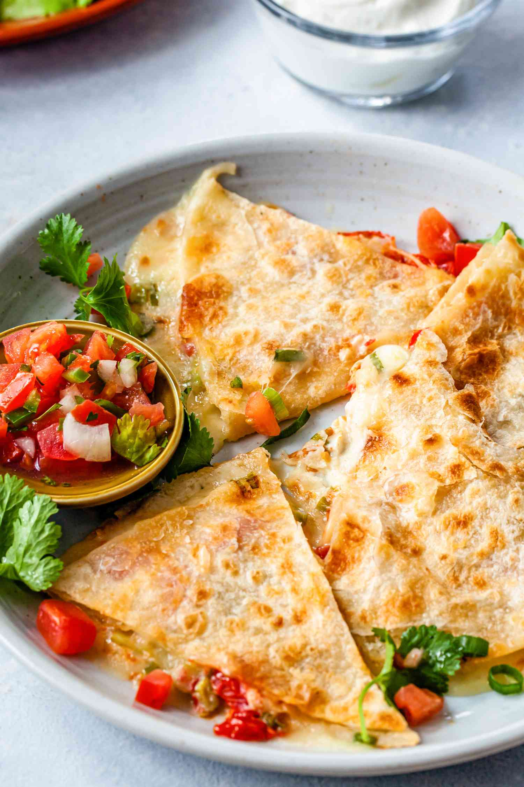

Quesadilla Recipe
Home

Description
A cheesy and delicious meal. This is a top tier choice for those that
want a good meal and not put in a ton of effort to make.
Ingredients
- Large flour tortillas
- Grated cheese
- Olive oil or butter
Optional
- Sliced mushrooms
- Green onions
- Black olives, sliced
- Fresh tomatoes, diced
- Chicken pieces
- Avocado
- Lettuce
- Apple cider vinegar
- Kosher salt
Steps
- Heat the tortillas until air pockets form:
Heat a large skillet
(cast iron works great) on medium high heat. Add a small amount of
oil (about 1/2 teaspoon) and spread it around the bottom of the pan
with a spatula (you could use butter as well). Take one large flour
tortilla and place it in the pan. Flip the tortilla over a few
times, 10 seconds between flips. Air pockets should begin to form
within the tortilla.
- Add the cheese and other ingredients:
When pockets of air begin
to form, take a handful of grated cheese, sprinkle over the top of
the tortilla, making sure that the cheese does not land on the pan
itself. Add whatever additional ingredients you choose: green
onion, sliced mushrooms, olives, tomatoes, etc. If you would like
your quesadilla to be a chicken quesadilla, add some diced cooked
chicken. Take care not to layer on the ingredients too thickly, as
they may not heat through properly.
- Lower the heat and cover pan:
Reduce the heat to low and cover
the pan. The pan should be hot enough by now to have plenty of
residual heat to melt the cheese and brown the tortilla. If the
quesadilla begins to smoke too much, remove from the heat. After a
minute, check to see if the cheese is melted. If not, return the
cover and keep checking every minute until the cheese is
melted.
- Fold the tortilla over:
When the cheese is sufficiently melted,
use a spatula to lift up one side of the quesadilla and flip over
the other side, as if you were making an omelette. The tortilla
should by now be browned slightly. If it is not browned, turn the
heat up to high and flip the quesadilla over every 10 seconds or so
until it gets browned.
- Remove the quesadilla from the pan and cut into wedges:
To make
the lettuce to accompany the quesadilla, thinly slice some iceberg
lettuce. Sprinkle some cider vinegar and salt on it. Serve with the
lettuce, salsa, sour cream, and guacamole.